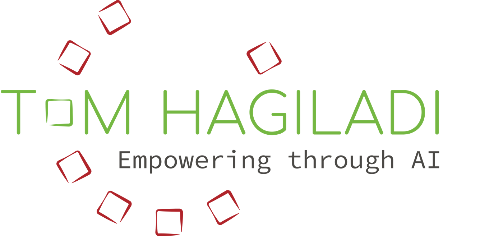
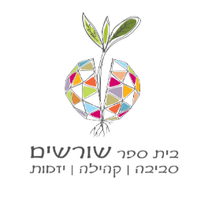
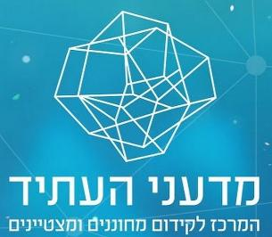
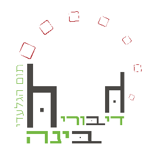
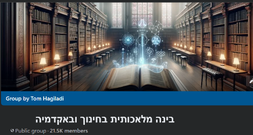
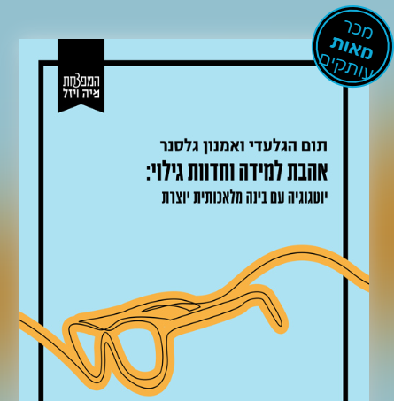

ג'מיני הלכה למעשה
השתלמות בינה מלאכותית בחינוך
תום הגלעדי
מפגש 1 · תיכון גולדה פתח תקווה · 10.11.2026
נעים להכיר
- עשרים שנה כאיש חינוך. התחלתי כמורה למדעים ולביולוגיה, ומשם לניהול מערכות חינוך: הקמה וניהול בית ספר, סגן מנהל פסג"ה תל אביב-יפו, אחראי פן חברתי-רגשי במדעני העתיד
- שלוש השנים האחרונות: רק הממשק שבין בינה מלאכותית לארגוני למידה והוראה - משרד החינוך, האקדמיה, וליווי התייעלות במגזר העסקי
- מנחה הפודקאסט "דיבורי בינה", מנהל את קהילת "בינה מלאכותית בחינוך ובאקדמיה", וכותב יחד עם פרופ' אמנון גלסנר את "אהבת למידה וחדוות גילוי"
- ובגולדה: נילי פתחה את ההשתלמות, ומהיום ממשיכים יחד





מה נעשה היום
שתי דקות עליכם
סרקו את הברקוד וענו. השאלון אנונימי, ולא צריך להתחבר לחשבון.
השאלון בגוגל פורמס
מה גילינו? ג'מיני מנתח
התשובות נכנסות לגיליון בדרייב, לבד
בג'מיני: מצרפים את הגיליון
מדביקים את הפרומפט
קוראים, ובודקים מול הנתונים
איך הייתם משתמשים בזה בכיתה?
אילו נתונים הייתם אוספים מהתלמידים, ועושים בהם שימוש בעזרת ג'מיני?
שאלון סוציומטרי
עם מי הייתם רוצים לעבוד? למי אתם פונים לעזרה? ג'מיני ממפה את הקשרים בכיתה, ומראה מי במרכז ומי בשוליים.
הוראה דיפרנציאלית
שאלון קצר לפני נושא חדש. ג'מיני מחלק את הכיתה לקבוצות לפי מה שהתלמידים כבר יודעים, ומציע משימה לכל קבוצה.
סטוריבוק
איך עושים סטוריבוק
בתפריט הצד, מתחת ל-Gems: Storybook
מתארים: למי, באיזה גיל, על מה, ובאיזה סגנון איור
אפשר להוסיף קבצים: תמונה או מסמך
תוך דקה-שתיים: ספר של כ-10 עמודים. תיקונים - במילים
דרך נוספת: בצ'אט רגיל, "צור ספר על...", עם המילה storybook באנגלית בתוך הבקשה.
השאלה היום היא לא מה הכלים יודעים לעשות,
אלא אילו יישומים של פדגוגיה מיטבית
הם מאפשרים.
מה התלמיד לומד מסטוריבוק?
יצירת הסיפור לא דורשת מהתלמיד מאמץ. הערך הוא במה שעושים עם התוצר.
וממילא, מתחת לגיל 18 אי אפשר ליצור סטוריבוק. המורה יוצר, והתלמידים עובדים עם התוצר.
מי עושה כאן את עבודת החשיבה - התלמיד, או הכלי?
מה המשימה שבאה אחרי הסיפור?
איך נדע שהתלמיד למד משהו?
ארבע דוגמאות
אוצר מילים מתוך הקשר
הסיפור משלב את רשימת המילים של היחידה. התלמידים מוצאים אותן, מנחשים משמעות מההקשר, וכותבים עמוד חסר עם שלוש מהן.
נקודת מבט
הסיפור מסופר רק מצד אחד. מי מספר? מה חסר? בזוגות כותבים את אותו עמוד מהצד השני.
מצאו את הטעות
בסיפור שלוש טעויות נפוצות של תלמידים. מחפשים, מנמקים, ומתקנים עמוד אחד.
סוף אחר
הסיפור ממשיך יצירה שלומדים, עם סוף אחר. מה הסופר בחר, ומה הבינה בחרה, ולמה?
ג'מס
מה זה ג'ם?
עוזר שבונים פעם אחת. כותבים לו הוראות קבועות, ואפשר לצרף לו קבצים.
כמו לתדרך מורה מחליף פעם אחת,
במקום לפני כל שיעור מחדש.
ומה זה סקיל? ולמה צריך אותו
בונים סקיל למשימה שחוזרת על עצמה, באותן הוראות. כותבים פעם אחת, ומשתמשים בכל מקום.
וגם: ג'מיני יכול להפוך שיחה טובה לסקיל, ובעמוד הסקילים יש "סקילים מומלצים" להתחלה.
דוגמאות לסקילים
מהדוגמאות של גוגל
- עזרה בשיעורי בית שלא נותנת תשובות
- "עוד נקודות מבט": תמיד שלוש עד חמש עמדות שונות על כל נושא
- סקיל בניית מצגות
- כתיבה בסגנון שלי
ולמורים
- "המשוב שלי" - שתי נקודות חוזק, אחת לשיפור ושאלה, בכל בקשת משוב
- "שלוש רמות" - כל חומר הופך לדף בשלוש רמות
- "בלי שמות" - עוצר כשמדביקים פרט מזהה של תלמיד
ג'מס הופכים לסקילים
בחלק מהחשבונות כבר אי אפשר ליצור ג'ם חדש
הג'מס לקריאה בלבד
הג'מס נמחקים
יוצרים ומשתמשים בג'מס
עוברים לתפריט ההגדרות, וממשיכים לעבוד
הופכים לסקילים
היום: בונים ג'ם בחשבון של המשרד. בחשבון פרטי - סקיל, עם אותן הוראות.
איך בונים ג'ם, או סקיל
ג'ם
סקיל
או "יצירה באמצעות Gemini", ומתארים במילים.
חמישה ג'מס מוכנים - בחרו אחד ובנו
- 1מורה פרטית - לא נותנת תשובה, מובילה צעד אחר צעד. ההמלצה של המדריך של משרד החינוך
- 2דף עבודה בשלוש רמות - עם מפתח תשובות למורה
- 3עוזר משוב לפי מחוון - תלמידים לפי מספר בלבד, בלי ציון
- 4מתכנן סטוריבוק פדגוגי - מטרה, פרומפט, משימה לתלמיד, ואיך בודקים
- 5בונה מחוונים - יעזור גם במטלת הסיכום
בדף: עורכים את ההוראות למקצוע שלכם, מעתיקים, ובונים. בחשבון פרטי - אותן הוראות, כסקיל.
golda-gemini-10-11-26
המייל, היומן והדרייב
ג'מיני שמכיר את המייל, היומן והדרייב שלכם
"מה מבקשים ממני השבוע?" - סיכום מיילים מההנהלה ומרכזי השכבה, לפי תאריך יעד
"איפה יש לי שעה פנויה לבדיקת עבודות?"
"מצאי את המצגת שלי על... והכיני ממנה שאלות חזרה"
"מצאי את המייל על הטיול והוסיפי ליומן - אבל קודם תראי לי"
באיזה חשבון אתם?
- עובדים ביום-יום עם המייל הפרטי? עברו קודם לחשבון הפרטי בג'מיני, ורק אז חברו.
- איך עוברים: תמונת הפרופיל בפינה העליונה ← בוחרים חשבון. אין אותו? "הוספת חשבון".
- איך יודעים איפה אתם: ליד תמונת הפרופיל של חשבון בית ספר מופיע הלוגו של הארגון, או התווית EDU.
מה זה אומר על הפרטיות שלכם
חשבון פרטי
כששמירת הפעילות מופעלת, מה שג'מיני קורא יכול לשמש לאימון, וחלקו נקרא בידי בודקים.
חשבון משרד החינוך
בלי אימון, ובלי בודקים.
הסיכון
הוראות מוסתרות במייל, או בהזמנה ליומן.
משרד החינוך
אין להכניס מידע מזהה של תלמידים.
כל הפרטים והמקורות - בדף ההתנסויות.
שמירת הפעילות: איפה, ומה משתנה
או באמצע הדרך: משאירים מופעלת, ומקצרים את המחיקה האוטומטית מ-18 חודשים ל-3.
מופעלת
- נשמרת 18 חודשים, כברירת מחדל
- בחשבון פרטי: יכולה לשמש לאימון, וחלק נקרא בידי בודקים
- החיבור למייל וליומן עובד, וגם סקילים
מושבתת
- לא משמשת לאימון. נשמרת עד 72 שעות
- אין חיבור למייל וליומן, ואין סקילים
- שיחות עם ג'מס לא נשמרות. הג'מס עצמם נשארים
בחשבון של משרד החינוך: את ההגדרה קובע מנהל המערכת, לא אתם.
איך מחברים - ונסו
או בקיצור: כותבים @ בצ'אט, ובוחרים אפליקציה. למשל @Gmail.
תנאי: שמירת הפעילות מופעלת.
בדף: עשרה פרומפטים לג'ימייל, ליומן, לדרייב, ולשילוב ביניהם.
golda-gemini-10-11-26
אתם בוחרים
אתם בוחרים את התוצר
ממה שעשיתם באמת בכיתה: מערך שיעור עם התאמה לרמות, משימת הערכה, עזר למידה מחומרים קיימים, יישומון או משחק בווייב-קודינג, או כל דבר אחר.
ובונים לו מחוון בעצמכם
מחוון אובייקטיבי, עם קריטריונים ברורים, ומיישמים אותו על התוצר. ג'ם "בונה מחוונים" יעזור.
ההגשה: אפשר לעבוד בזוגות, אבל ההגשה אישית - כל אחד מגיש עבודה משלו. 2-3 עמודים: החלק היישומי, המחוון שלכם, רפלקציה, ומקורות.
התחילו לאסוף כבר מהיום. את מועד ההגשה נתאם עם אורית לקראת הסיום.
נתראה ב-24.11
נסו דבר אחד בכיתה:
ג'ם או סקיל שבניתם
עם משימה אמיתית שלכם, או עם התלמידים.
סטוריבוק, עם משימה אחריו
המורה יוצר, והתלמידים עושים את עבודת החשיבה.
בואו עם רשמים ועם דוגמה - בלי שמות של תלמידים.
תודה
תום הגלעדי